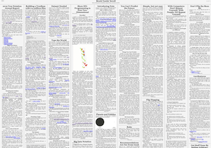

📜 Scroll: Build your own public domain newspaper.

Screenshot:
What makes Scroll different?
Scroll is different than other static site generators in 3 ways.
- Instead of Markdown, Scroll uses the easily extendible Scrolldown, so you can invent new languages to better fit your content.
- Instead of supporting licenses, Scroll is 100% focused on public domain sites and everything is designed with that assumption.
- The default Scroll theme publishes all articles to a single page, so readers can read faster at a higher level, like reading a newspaper.
How do I get Scroll?
The instant way is to try Scroll in GitPod.
Scroll is a command line app you install on your local machine. Scroll requires basic familiarity with the command line and NodeJs >=14. If you do not have NodeJs on your machine, one way is to install n which makes it easy to get NodeJs.
If you would like to use Scroll but aren't familiar with the command line, please open an issue and we may be able to help.
Once you have NodeJs installed you can install from GitHub or npm. Scroll is scroll-cli on npm.
You can install from GitHub:
git clone https://github.com/publicdomaincompany/scroll
cd scroll
npm install -g .
Or you can install Scroll with npm by typing:
npm install -g scroll-cli
How do I use Scroll?
Scroll is a command line app. To see the commands type:
scroll help
Where do I get help?
Post an issue in this GitHub or email us.
What are some example sites using Scroll?
On beta launch day we have BreckYunits.com.
What does the name Scroll refer to?
A scroll is a single folder containing Scrolldown files and a `scroll.settings` file. Scroll compiles those Scrolldown files into a static index.html page.
Scroll is also the name of the command line app that includes a simple fs watch app for live preview.
Scrolldown is the name of a Tree Language defined in this grammar.
What does a typical project folder look like?
A typical Scroll project folder, excluding the html files built by Scroll, looks like this:
📁yourDomainName.org
about.scroll
publishedArticle.scroll
anImageInTheArticle.png
scroll.settings
The `scroll.settings` file let's Scroll know that a folder contains a Scroll.
When you "build" a Scroll site, you are simply generating the `index.html` and `[article].html` files in the site's folder.
With Scroll your site's Scroll files and static files and generated html are all in one public folder and checked into version control. Though often you may want to add `*.html` to your `.gitignore`.
How do I save drafts?
Have a draft scroll next to your published scroll. For example:
📁drafts
someDraft.scroll
scroll.settings
📁yourDomainName.org
publishedArticle.scroll
scroll.settings
What file formats does Scroll use?
Scroll articles are written as Scrolldown files with the file extension `scroll`. The grammar for Scrolldown is defined here.
What language is Scroll written in?
The Scroll CLI app is written in plain Javascript and runs in Node.js. Scroll makes heavy use of Tree Languages. The CSS is written in Hakon. The HTML is written in stump.
TypeScript may be used in the future but Scroll may never get over 1kloc so that might not be necessary.
How does versioning of articles work?
Scroll is designed for git. A single article is stored as a single file tracked by git.
Why the single page layout?
Scroll is designed to make it easier for syntopic reading. Being able to scan the page like a newspaper. This allows you to read at a higher level—to "get in the author's head"— compared to reading one article at a time from beginning to end.
And if anyone prefers to read a scroll in a different way—they can! Scroll is for public domain sites. People are free to arrange the symbols any way they wish.
Will you make design decisions for non-public domain sites?
No.
Can I use Scroll for internal private sites not intended for publishing?
Yes!
In the single page layout why don't you have only the newest articles above the fold?
This was originally a bug. But then it turns out to be a feature, as it gives older articles, which are often more important, more visibility.
Is there a place I can play with the Scrolldown grammar and see how it compiles to HTML?
Yes. In the Tree Language Designer.
How do I check for broken links?
Scroll does not check for broken links. For that, try linkinator.
# npm install -g linkinator
linkinator https://scroll.publicdomaincompany.com > brokenLinks.txt
How do I check browser performance?
Scroll does not have browser perf tools built in. For that, try lighthouse.
# npm install -g lighthouse
lighthouse https://scroll.publicdomaincompany.com --output-path scrollBrowserPerf.html; open scrollBrowserPerf.html
Where should I host my site?
Any web server works. You can even host your scroll for free using GitHub Pages, just like this site.
How do I use Scroll with a custom domain?
Just buy a domain and point it to your web server or web host (such as GitHub Pages). Google Domains is where this domain is registered and is a great service.
How can I deploy my site?
If you have your own web server try rsync. Here's a bash one liner:
# deploy.sh
# swap "/var/www/html" with the path to your website's location on your web server
rsync -vr /[path/to/your/site]/* [yourdomain.com]:/var/www/html
Add a section like the one below to your ~.ssh/config to save your username and correct key pair.
Host example.com
User yourUserName
IdentityFile ~/.ssh/example_id_rsa
IdentitiesOnly yes
How can I build a scroll from a Twitter account?
Hopefully someone will build a package or site that does this. For now, on your Twitter settings, download an archive of your data and convert the tweets JSON into scroll files. Or to experiment faster use this tool to grab some tweets as a TSV.
What were some alternatives considered?
There was no publishing software that reads and writes Scrolldown yet so building Scroll was necessary. Jekyll and Brecksblog were the two biggest inspirations.
What has changed in recent versions?
View the releaseNotes.
Contributing to Scroll development
How do I contribute?
File issues. Share your Scroll sites.
You can submit pull requests too. The shorter the better.
How do I debug node.js performance?
# cd your_slow_scroll
# you may need to update the path below so it points to your scroll code
node --cpu-prof --cpu-prof-name=scrollNodePerf.cpuprofile ~/scroll/scroll.js build
# Now ➡️ open a new Chrome tab ➡️ open devtools ➡️ click Performance ➡️ click "Load Profile..." ➡️ select your scrollNodePerf.cpuprofile
How do I format the Scrolldown Grammar file?
# Assuming you've already done `jtree register YOUR_PATH/jtree/langs/grammar/grammar.grammar`
jtree format scrolldown.grammar
How do I run cross browser tests?
For that we use BrowserStack.